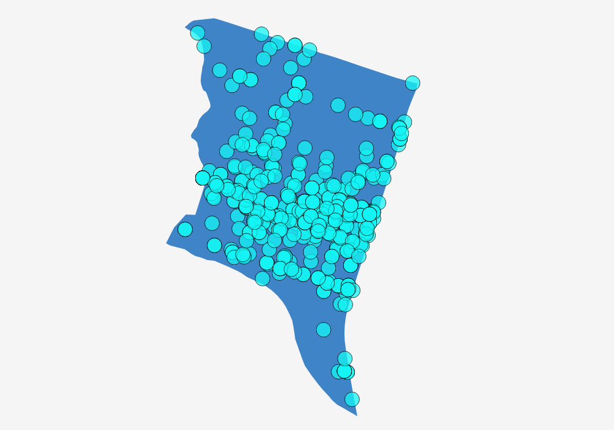
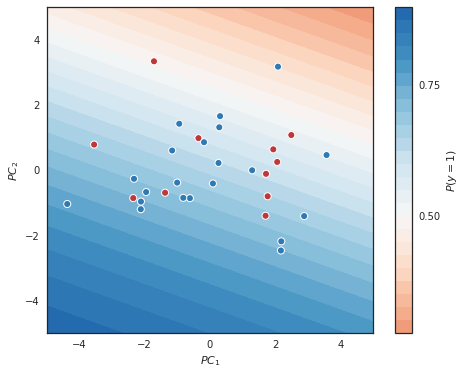

Explainer page
This is the explainer page for the Final Project of 02806 Social Data Analysis and visualization. The project source code is available here (via GitHub).To begin the data visualization journey, check out our video:
Motivation
Being accused or suspected on the basis of race, ethnicity or religion is neither fun nor legal. Unfortunately, the practice of racial profiling has been an increasingly popular term in the U.S. In 2015, 1,134 people in Austin, TX filed complaints related to racial profiling by local enforcement. And the problems persists; in 2017 The state of Texas passed a bill, commanding all police officers to search anyone who "looks like an immigrant". In this project we examine relationships between geographic occurences of traffic stops by Austin law enforcement and demographics of certain zip-codes to find patterns of racial profiling. This way, we can tell whether you are more likely to get profiled in certain parts of town than others, based on your race.What are our datasets?
As a response to the public outcry, the city of Austin yearly releases data for motor vehicle stops that results in a citation or arrest. The 2016 data includes 9185 stops, and information about factors such as location, race time, etc. The three most important attributes are described below:
| Attribute | Description |
|---|---|
| APD_RACE_DESC | Race of suspect |
| RACE_KNOWN | Was race known by officer before stop? |
| X_COORDINATE, Y_COORDINATE | Coordinates for stop location in State Plane Coordinate System |
Why we chose the datasets
These two datasets combined gives an overall impression of where the majority of arrest in Austin takes place, and perhaps why. Demographics is an important factor when analyzing crime data, but can also tell whether there are discrepancies in the number of arrest of specific races in the area. Since both datasets can be directly coded to zip-codes of Austin, they may assist each other.
What is the goal for the end user's experience?
The user should follow the narrative from the introductory exploratory data visualizations to the conclusion and its corresponding explanatory visualization. By making our visualizations interactive, we hope to encourage the user to explore the data and come to his or her own conclusions. The user should find it easy and accessible to explore the data and get the information he or her needs. Furthermore, this information should be presented in a credible manner, and give valuable insights. After going through our visualizations, the user should feel more knowledgeable about racial profiling incidents in Austin, which races are especially exposed, and where incidents are most likely to occur.
Basic stats
Write about choices in data cleaning and preprocessing
The State Plane Coordinates had to be converted through finding their FIBS code, converting lengths into
correct measures (american yards uuugh) and then preprocess in Python through a Google maps API to
convert every observation to Lat/Lon.
The race index had to be made as well by counting observations by zip code in whites and non whites
to extract how their distributions compared to the total arrested in the zip code was.
The principal component analysis of the housing data had the following structure (all other features
are omitted due to low weightings):
| Population below poverty level | Median household income | Unemployment rate | Large households proportion (5+ members) | Median rent | Median home value | Average monthly transportation cost |
|---|---|---|---|---|---|---|
| 0.396 | -0.466 | 0.429 | 0.293 | -0.332 | -0.421 | -0.039 |
| 0.250 | -0.175 | 0.108 | -0.525 | 0.146 | 0.214 | -0.729 |
Dataset stats
The arrest dataset clearly showed the linear structure of roads in the US as seen below:  There was 7 (6 and unknown) races found in the dataset where frequencies shows a dominance in Hispanics, Whites and Blacks, which is quite reasonable for Texas:HISPANIC OR LATINO: 3435
WHITE: 3417
BLACK: 2152
ASIAN: 93
UNKNOWN: 42
MIDDLE EASTERN: 35
HAWAIIAN/PACIFIC ISLANDER: 5
AMERICAN INDIAN/ALASKAN NATIVE: 5
One of the tendencies in the housing market data was that classification problem was not linear. We tried a logistic regression with the following output:  This clearly show horrible linear tendencies, which is why we ended up with a highly non-linear classifier.
Genre
Tools of visual narrative
To begin the visual structure, an establishing shot presents the map for the user, with a close-up (right pane) as highlighting of a point of interest, in this case a pre-specified zip-code. The main map is chloropeth and is also useful for highlighting specific points of interest, for when the user interacts. When transitioning between views, Familiar Objects guides the transition, e.g. the selected zip-code is isolated in the right pane, and is added data points as to give a more detailed view. Furthermore, changing the current zipcode will initiate an animated transition in the bar chart, telling the user both the new values for zip code and the zipcode itself. A neat little detail is the small interactive buttons in the accompanying article. They allow for direct communication of highlights and points of interest in the visualization, and adds an extra dimension of interactivity.Tools of narrative structure
As the page is structured as a partitioned poster, the data is ordered linearly for the user to navigate from top to bottom. The first visualization is very interactive, letting the user filter the map by selection of a zipcode of interest. Furthermore, hovering over a bar in the barchart shows details for the selected zipcode. The user is precented explicit instructions in the beginning of the page, ensuring that the user takes advantage of the interactivity. As for messaging, the page is structured as an accompanying article, giving details and insights as the user scrolls through. An introductory text is given to introduce the reader to the problem at hand, and captions and headlines throughout the article communicates observations and progress throughout the article.Visualizations
While the overall structure of the visualization relies heavily on the author-driven approach in its rigidity and linearity, our visualizations serve as entry-points for reader-driven interaction, providing the reader with details-on-demand and filtering options. The overall structure resembles the Martini-Glass Structure with its author-driven content coupled with reader-driven interaction and finally supporting the conclusion using an interactive visualization.This section will serve as an overview of the types of visualizations that were utilized in the narrative.
The Choropleth
Two choropleths are implemented, each based on the same geographic partitioning of the city of Austin. Representing the exact same geographic space in two choropleths with two different statistics is perhaps our most powerful visual tool, as it enables for a reader-driven comparison by simply comparing the color encodings of each pair of areas. This interaction involves the reader by allowing them to make their own conclusions while providing additional support for the conclusions found in the text. In our visualization, the choropleths depict the proportion of traffic stops to total traffic stops, and our own racial profiling index respectively. The placement of the choropleths, bookending the narration, signifies the progress of the analysis and motivates the reader to return to the starting point of the narration. The first choropleth uses color-coded areas to emphasize zip codes with a relatively high number of traffic stops. In enabling an interaction between the first choropleth and the bar chart, we are providing the reader with options to filter the data and receive details on demand.The Bar Chart
The bar chart is a typical example of an interactive, annotated graph. The graph is tightly coupled with the interactive choropleth, visualizing only the area the reader has currently selected. A label updates according to the input, depicting the zip code of the currently evaluated area. The bar chart represents information using color-coding and tooltips. The scale of the data varies wildly, as some zip codes have exceedingly few traffic stops. To emphasize this difference to the reader, a label is at all times showing with the total number of stops showcased in the bar chart. This is an alternative to normalizing the data and allows the reader to make informed comparisons. The combination of the first choropleth and the bar chart leans towards the drill-down structure, enabling the user to receive more detailed information about an area that they may select themselves.The SVM Classifier Heat Map/Scatter Plot
This is the only non-interactive visualization in the narrative. The purpose of the visualization is primarily analytical and allows the authors to discover whether the racial profiling index can be predicted based on socio-economic factors. The visualization is structured as a heat map with discrete color levels encoding the probability of the projection of an observation onto the first two principal components belonging to class 1 (racial profiling index > 1). The combination of a scatter plot and a heat map allows the reader to evaluate the performance of the classifier visually by evaluating the separation of observations.Discussion
White dominated arrests seems to be influenced by socio-economic factors, which is quite common. Due to our lack of preacquired knowledge, the data was not transformed to take care of this, which could have given the conclusion an even stronger basis. Luckily, non-white arrests where not that dependent on socio-economic factors, so our assumptions on traditional racial profiling still stands. The racial profiling index is only our own idea, and with more time a proper social science index could have been chosen with aspect to scientific articles. With more time, a transformation of the data to handle socio-economic factors could be done as well.Unfortunately, many zipcodes in Austin only had few registered traffic stops (less than 10). This leads to skewed distributions of race, and we therefore had to leave out large parts of town. Another time, we should look to combine data for more years to get more data. When we started analyzing the data, we were worried that 45 zipcodes would be too small for the user to click. This proved not to be a problem, however, due to the missing data in large areas of town, we could have attempted to combine said zipcodes into larger sections. Since we couldn 't find any socio-economic data for Austin from 2016, we had to use the data from 2014. In those two years, gentrification could have changed the factors for some zipcodes, possibly making our analysis invalid. It is however unlikely for such large changes to happen in two years. Overall, our data tells a story of socio-economic inequality in denser populated cities, but fails to actually find racial profiling from the data alone.
Contributions
Sebastian Frelle Koch: Interactive map of Austin and detailed map for each zip-code with data points. Explainer page section on "Visualizations".
Jakob Thorsbro: Data analysis and preparation including converting all State Plane Coordinates to Lat/Lon, PCA and SVM decision boundary analysis. Heatmap of austin with race index.
Elias Lundgaard Pedersen: Page set-up, interactive bar chart connected to the map and the explainer page.